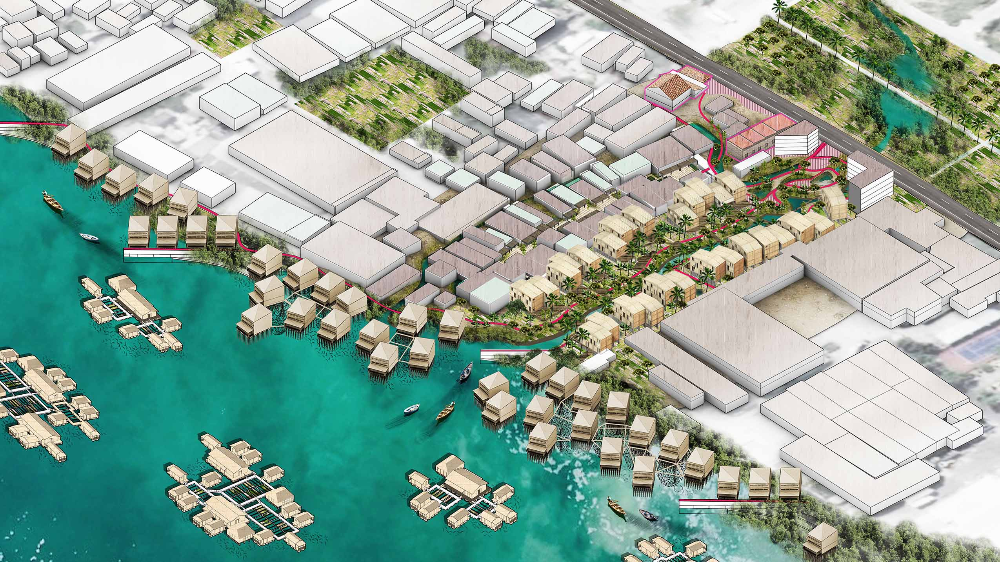

Ashley Louie
Ashley Louie
Life Aquatic
conserving water culture for adaptive resilience
 Can Tho, Vietnam
Collaborators Junyu Cao, Zeyi Jiang, Dian Yu
The oldest urban area in Can Tho, Binh Thuy is a site of historic temples and heritage houses adjacent to vernacular stilt houses on the water. As the city rapidly urbanizes, roads are becoming canals, sea walls are replacing stilt houses, and impermeable surfaces are covering green spaces. With the displacement of its people and water landscape, Can Tho risks losing its identity and resilience, becoming more vulnerable to subsidence and sea level rise. Addressing this risk, landscape and cultural conservation becomes a driver for adapting water-based livelihoods into resilient growth. The boundaries of conservation expand beyond preserving historic landmarks; vernacular infrastructures and their systems, such as wetlands, dikes, canals, docks, floating structures, and stilt houses, are identified as culturally and ecologically resilient public assets that protect the city and its people, while promoting development and growth. The co-benefits of this adaptive conservation strategy include biodiversity, food security, job diversity, and public green space.
For further information, refer to the Life Aquatic project and additional student research projects on Water Urbanism: Can Tho, which exhibits the collective work of the Urban Design Global Cities & Climate Change Studio, led by Kate Orff in Spring 2019 at Columbia University, Graduate School of Architecture Planning and Preservation.